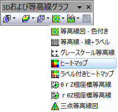

ヒートマップ
Heat_map

必要なデータ
または、
- 行列：1つの行列シートオブジェクトが複数含まれるシートもサポートされています。
または、
- イメージ：1つのイメージウィンドウフレームが複数含まれるイメージもサポートされています。すべてのフレームをめくる方法については、以下のこのページを参照してください。
グラフ作成
行列シートをアクティブにするか、必要なデータをワークシートもしくはイメージウィンドウ上で選択します。
メインメニューから、 を選択します。
または、
3Dおよび等高線グラフツールバーの ヒートマップボタンをクリックします。
- 
テンプレート
HeatMap.otp
(Originのプログラムフォルダにインストールされています。)
Notes
このグラフは、等高線図をベースにしたものですが、いくつか異なる点があります。
- グラフの作図の詳細ダイアログ(プロット属性)のカラーマップ/等高線タブのデフォルトで、グリッド間を塗る が有効で、等高線が描かれない設定になっています。
- 目盛は、ブロック上の中心になります。副目盛は表示されません。
- XYワークシートデータからプロットする場合、ユーザー指定の入力に基づいて、XYデータに対して2D度数カウントが実行されます。デフォルトでは、ビンは自動的に選択され、XYペアの数が各ビンに割り当てられます。結果のビン出力はヒートマップを生成するために使用され、出力シートのラベル行のビンの中心がY軸の目盛り/ラベルを提供し、最初の列のビンの中心がX軸の目盛り/ラベルを提供します。ビン化はplot_heatmapxy Xファンクションによって処理されます。
- XYZワークシートデータからプロットするときは、ユーザー指定の入力に基づいて、XYZデータに対して2D度数カウントが実行されます。デフォルトでは、ビンは自動的に選択され、各ビンに対して平均Z値が計算されます（他の統計を指定することもできます。）。結果のビン出力はヒートマップを生成するために使用され、出力シートのラベル行のビンの中心がY軸の目盛り/ラベルを提供し、最初の列のビンの中心がX軸の目盛り/ラベルを提供します。ビン化はplot_heatmapxyz Xファンクションによって処理されます。
- 仮想行列から作図すると、X軸の主目盛の数と行の数が等しくなり、Y 軸の主目盛の数と列の数が等しくなります。
- デフォルトで、ヒートマップグラフはカラーマップの塗りつぶしにThermometerパレットを使用します。欠損値の色として、0の色よりも深い青色が設定されています。
 | 目盛表と日時データについては、こちらの案内を参照してください。
|